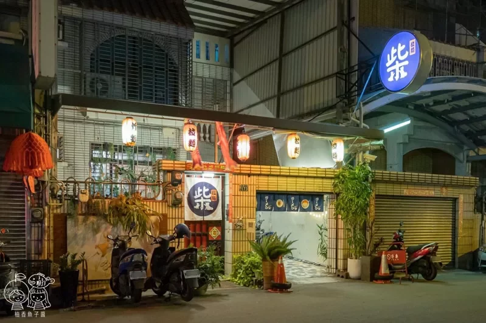
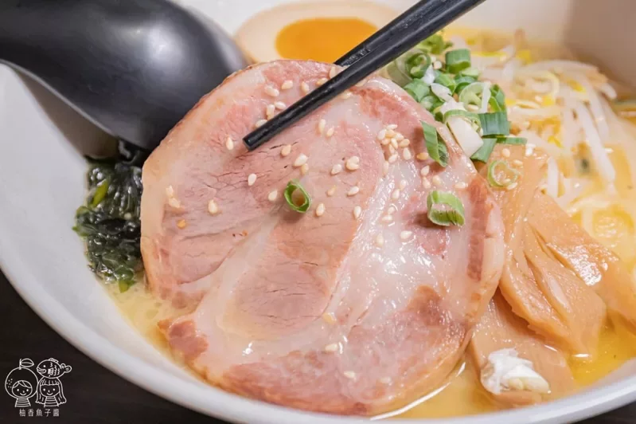
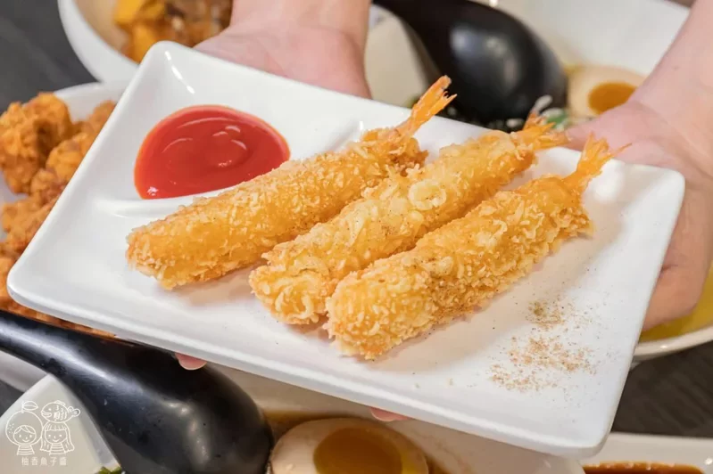
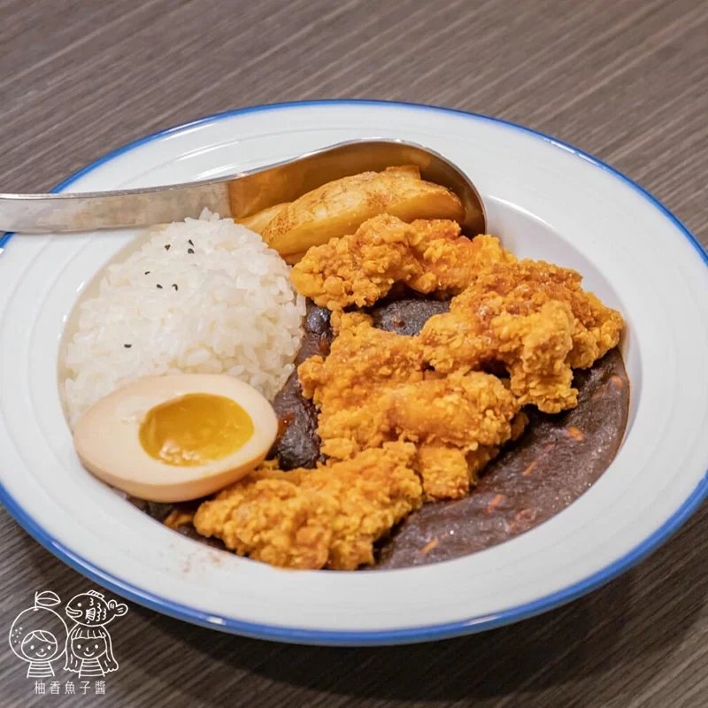

首頁
阿娘給的蒜味肉羹
三輪車手工麻糬
心得

柴拉麵
柴拉麵就位在南屯大墩十街上，外觀像是一般的住宅，穿過院子才會走到店內，
這裡的道路不到非常寬敞，但門口好停放機車，開車的朋友可以選擇停在萬壽棒球場的附設地下停車場，
也能和我們一樣停在大墩十一街的收費停車場，走過來都不用三分鐘。

雞白濃湯拉麵(極品叉燒)
許多有帶小朋友的家庭都會點這款雞白濃湯，口味最為溫順、單純又不刺激，
每碗拉麵裡頭皆附半顆溏心蛋、豆芽菜、海帶芽、筍干片與青蔥，
如果有不敢吃的食材都可以事先告知店家調整。
雞白濃湯是以日本進口的雞湯作為湯底，以雞的精華燉煮成接近乳白色，喝起來香醇卻完全不油膩，
而且鹹度也有經過調整，是可以直接入口的鹹度。
如果偏好豐富一點的風味層次，可以再加點拉麵辣醬和蝦米辣醬試試，像魚編就特別愛加蝦米辣醬，不用加太多就香辣夠味！

赤味增拉麵(日式炸蝦)
或許有些朋友看到「赤味增」會以為是具有辣度的口味，其實「赤味增」指的是日本紅味噌，
所以不但沒有辣度，而且因為發酵的時間較黃味噌和白味噌來得久，香氣也相對來得更為濃郁。
與前面的雞白濃湯相同，湯頭都有經過改良，更加符合台灣人吃麵喝湯的習慣，
赤味增不但有著黃豆豆香的濃香醇厚，鹹甜比例也掌握得不錯，完全不死鹹，還有豆香的甘甜後韻。

黑咖哩飯(唐揚雞肉)
除了拉麵之外，也有不少客人是專程來吃他們家的黑咖哩飯，整份搭配了白飯、薯條與半顆溏心蛋，
原本想說裡頭沒有看到蔬菜，一時間覺得還有那麼點不習慣，沒想到其實黑咖哩當中大有玄機～
經過熟成的咖哩表現出來的風味更加濃厚，裡頭還能吃得到金針菇與其他多種菇類，口感更有層次，
入口甜香帶辣，辣度大概是小辣左右，黑咖哩本身的甜度剛好又中和了一些辣度，整體辣度介在微辣和小辣之間，算是還蠻親民的～